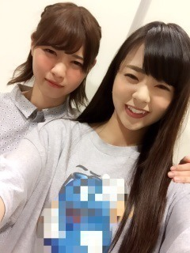
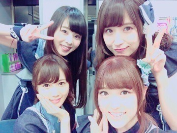
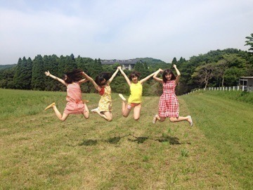
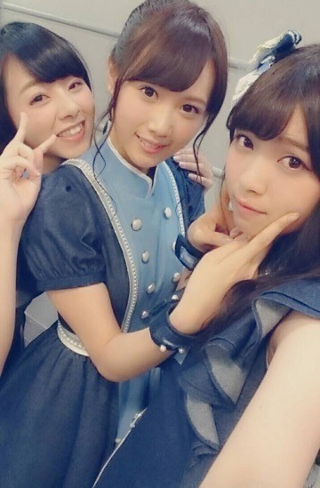

こんにちわぁー。
まにだよ？ ろってぃーだよ？
ん♡ 親指ぶれたでぇ.
皆元気してますかー？
雨が続いてるけど,私はいつも通り元気ぃ.＊
最近もまた歌番組などなど... 充実してます．『THE MUSIC DAY』♩♩見てくれたかな？
沢山の豪華アーティストさんが居て,同じ場所に立てることに感謝感謝です.＊
やっぱお客さんが入ってのパフォーマンスは本当に気持ちいいな！って思いました。
放送後,755やコメントに感想書いてくれてありがとう！ ちゃんと読んだよ♡
嬉しかったよ．
七瀬と写真撮り忘れたぁぁぁ！
ってことで前に載せた写真を再活用．笑ノ

先週,七瀬と晩ご飯行ってきたよぉ♡
七瀬と行く時は 2人がいいんだぁ.
鍋行って，カレー行って，どっか行って,今回はぁーー,,, まにオススメのカフェに行ってきましたぁ♡
人少ないし，七瀬と2人でのんび～り,まった～りしてきました．ノ
で，色々と乃木の話したり,地元の話したりして～～～, 店出る前にお手洗いに行って,「会計お願いします」って言ったら,店の人が「会計は済んでますよ(*^^*)」って言ってきてさ,,,
七瀬の方みたら「お祝いやっ！」って言ってくれましたぁ♡
『七瀬ぇぇぇーーー‼︎‼︎ ありがとぉぉぉ゜・(ノД`)・゜』って感じでした．♡♡♡
何のお祝いかはまだ言えないんだけど,とあることで七瀬がすごい喜んでくれて...。
その後に,「食べたし歩こかー！」ってなって
お散歩しつつ,眼鏡見たり，お洋服見たりして買い物してたよ～。 楽しかったなん♡

まひろ左のオレンジ．


ばいばーい。まに♡